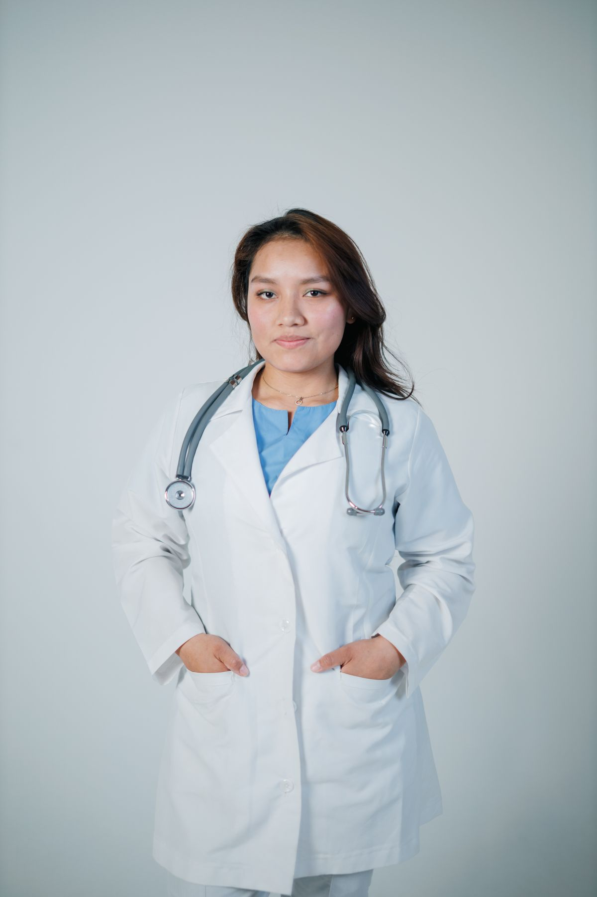
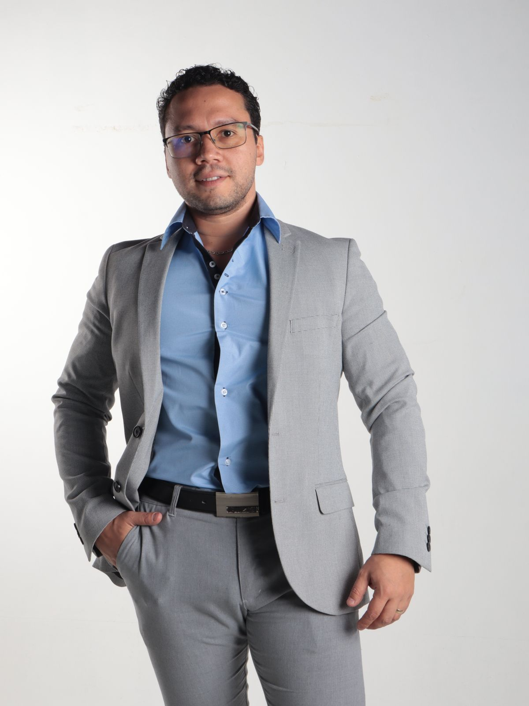
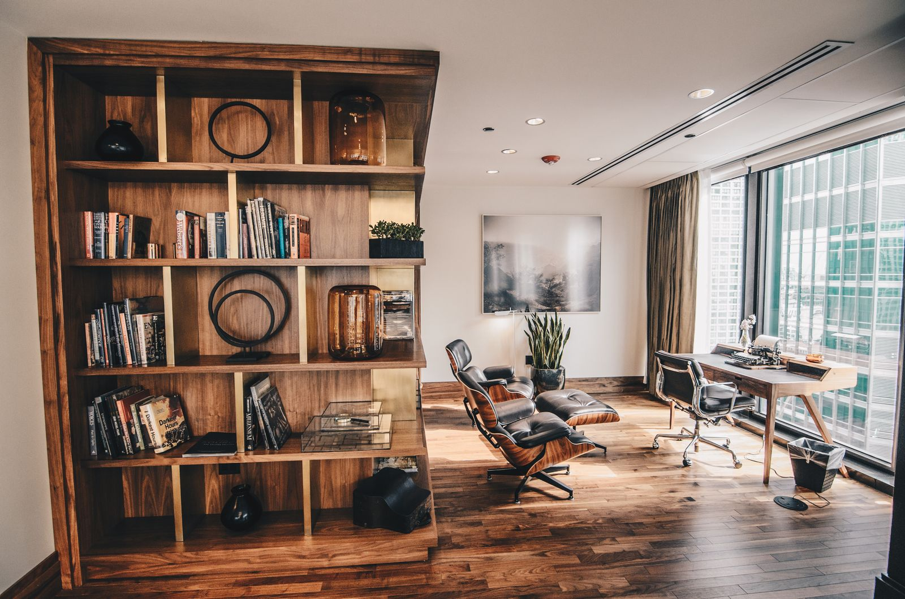

브랜드 마케팅
유행은 지나갑니다.
이름은 남습니다.
본 사람이, 다시 검색하게 만듭니다.
무료로 진단받기 ↓
브랜드 마케팅이 필요한 이유
광고는 계속 나가는데,
문의는 그대로입니다.
블로그는 쌓였습니다.
그런데 검색하면 경쟁사가 먼저 보입니다.
릴스 조회수는 올랐습니다.
브랜드를 검색하는 사람은 늘지 않았습니다.
AI에게 물어보면,
경쟁사의 이름부터 나옵니다.
채널
알리는 곳과, 확인하는 곳과, 더 멀리 퍼지는 방식은 서로 다릅니다.

판단
릴스부터 해야 하나요?
꼭 그렇지는 않습니다. 블로그가 먼저인 브랜드도 있습니다.
대표가 직접 나와야 하나요?
유리할 때만 권합니다.
광고비를 더 써야 하나요?
먼저, 지금 쌓여 있는 콘텐츠부터 봅니다.
채널을 전부 운영해야 하나요?
필요한 채널만 운영합니다.
실행
인터뷰 하나가 릴스와 블로그와 기사로 이어집니다.


전문직 분야

Why NowMoaAd
무료 진단
광고를 권하기 전에,
지금 검색되는 것부터 확인하겠습니다.
감사합니다. 24시간 안에 연락드리겠습니다.
신청 후 담당 브랜드 컨설턴트가 직접 연락드립니다.